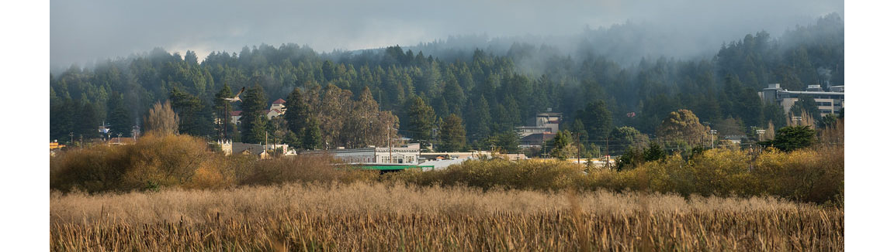

About Me.
 HSU FlickrMy experience as a research assistant and outreach manager further my goal to communicate how humans interact with changing environments. In these challenging times it is especially important to share rather than silence pertinent environmental information. I seek to develop skills in order to apply proper field research methods to compile a cohesive assessment of the different threats the environment faces using GIS. As an avid bird watcher, I want to be a positive role model for younger generations and see that the long-term viability of native bird species thrives.
I have recently been nominated by my professor to become a student board member for the North American Cartographic Information Society (NACIS) where I showcased my talent at the annual conference in Canada. My enthusiasm to learn more and expose myself to new experiences is further evident with my past position on Associated Students as the Representative for my college in Arts, Humanities, and Social Sciences where I engaged in events going on around campus. Volunteering for Caltrans District 1 in the Environmental Department using GIS has allowed me to gain a significant amount of experience and knowledge. I’ve had the opportunity to learn by helping others create maps and achieve a better understanding in complex technical research and spatial analysis. I am always looking to further develop these skills and become a better-rounded person.
A quick look at my stats
education
- Humboldt State University, Arcata CA
Bachelor of Arts in Geography with a minor in Geospatial Sciences 3.5 GPA - Santa Ana College, Santa Ana CA
Associate's Degree in Geography and Liberal Arts 3.5 GPA - Advanced Geospatial Certificate
skills
- ArcGIS
- ENVI
- Adobe Creative Suite
- Surveying
- HTML, Javascript, CSS
- CPR Certified
awards and honors
- Suzanne Wetzel Seeman Scholarship
- Outstanding Student Nominee for College of Arts, Humanities, & Social Sciences
- Outstanding Student Nominee for Al Elpusan Award for Student Activism
- Associate Student Representative for College of Arts, Humanities, & Social Sciences
- Student Board Director For the North American Cartographic Information Society (NACIS)